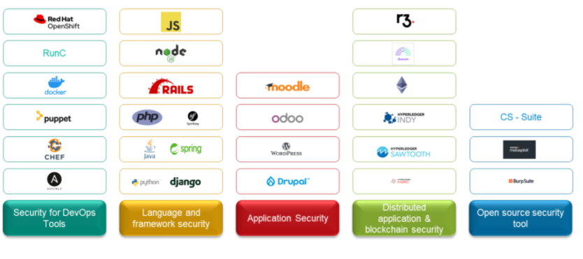

Growth of open source
Over a decade ago, open source often resonated with communities and their specific projects. Fast forward today, open source is prominent in the IT landscape. Many organizations have started to realize the benefits of open source and have started to adopt it.
Today it is part of enterprise IT strategy and drive enterprise transformational initiatives. Innovation is a necessity for business, open source is equipped to help organizations to be innovative. Today open source is part of almost any industry sector and is showing growing trend of adoption among the industry peers.
Open source is offering lot of benefits for organization, some of them are
-
Enabling innovation at pace
-
Focuses on enhancing developer productivity as developers need not develop everything from grounds up
-
The ability for developers to upskill through contribution in various open source community initiatives thus resulting in drawing best talent towards the organization
-
Enabling organizations to gain visibility among peers in the industry as an open source contributor.
Open source security – factors to be considered
As the open source adoption increases, the footprint of open source technology in the IT landscape increases. A typical open source tech stack based application will consists of internally developed code plus code components sourced from external open source code repositories as well as external binary dependencies consumed during build process.
All code components may have inherent security vulnerabilities that should be identified and remediated before consuming them. Without formal security policies and controls in place, consuming any open source software component would raise the security risks for the organization. Thus, it is essential to factor in security for open source adoption.
Key factors to be addressed to secure open source
Absence of security control regime
Lack of clarity of dependencies
Unattended inherent vulnerabilities
Limited visibility on open source assets – higher security risks
Absence of security control regime:
Many organizations don’t have sufficient security policies for consuming open source code components or assessing the changes in open source code components for security. Such lapses in policies, processes and procedures often increases the security threats for organization.
Lack of clarity of dependencies:
There are two types of dependencies – internal and external. Most organization employing version control mechanism can maintain a tab on internal dependencies. This is not the case for external dependencies. The external components are consumed as is without any security assessment, This is a very risky approach impacting threat exposure of applications consuming such external dependencies.
Unattended inherent vulnerabilities:
Many at times, open source code components are consumed due to lack of awareness on the security essentials for open source. The inherent vulnerabilities in these consumed components makes its way into the application and increases its threat exposure. Every code component should be subjected to security assessment. No code component can be deemed secured until it is assessed.
Limited visibility on open source assets – higher security risks:
IT landscape is increasing year on year in every organizations to align with their business requirements. All assets need not be in the same level as many undergo changes at varying pace. Lack of clarity on assets is one of the major reasons for security issues. Open Source software undergo frequent changes. These changes need to be assessed for security issues and confirmed whether it can be consumed. Newer changes at times also address some of the known vulnerabilities thus it is essential to track and assess these changes. This is effort intensive activity and quite often this is overlooked thus impacting the organization’s overall security posture.
Be-Secure
Be-Secure is an umbrella of security projects and utilities. These security projects and utilities are for everyone who is focused on securing their open source projects or contribute to open source projects with a focus on security. Securing open source projects is now a joint responsibility of contributors and consumers of these projects. Be-Secure will enable you to achieve this in a seamless manner.
-
Vision : Enable individuals to secure their open source initiatives by equipping with the required security tools and utilities.
-
Goal : Build an open source security community offering support to enhance security posture of open source initiatives.
Open source Security tech stacks:
We have grouped various open source technologies into 5 main categories. By doing so, it will help us to device appropriate security measures and processes to enhance the security of these open source tech stacks.
We should be able to accommodate almost all the existing open source technologies in any one of the 5 categories. The categories are defined based on the common characteristics and usage of the respective open source technologies.

Be-Secure Projects/ Utility:
- BeSman: a command-line utility to provision customized security environments for an open source security tech stack to address the specific security requirements of the end user.
By securing our open source projects, we will be able to help downstream consumers of our projects to secure their application else it will add overhead for them.
Given the rate of open source adoption it is essential that we focus on security of what we consume and what we build as part of open source initiative. BeSman utility will help everyone to address this requirement effectively.
BeSman dev environments will be preconfigured for an open source project along with tools that will enable any developer to commence with their development activity. Similarly, the BeSman sec environment will be preconfigured with open source security tools customized to perform security assessment of an open source project.
BeSman environments:
| Open Source Security stack | Sub Category | Sl.No | BeSman Env name | Description | Entities prebundled in the BeSman Env (mandatory) | Entities that can be included in the BeSman Env (optional) | Development Tools (IDE) | Dependencies | Status | Security Risk Status |
|---|---|---|---|---|---|---|---|---|---|---|
| DevOps Tool Security | Ansible | 1 | bes-ansibledev-env | Secure BeSman environment for Ansible development | Git Python Ansible-galaxy pypi VSCode Jenkins |
VSCode | Python, Ruby, bash, ansible-galaxy | Requirement gathering and analysis | TBD | |
| 2 | bes-ansiblesec-env | Secure BeSman environment for Ansible security testing | Java Jenkins Python Ansible-galaxy pypi bes-appsastsec-env bes-appdastsec-env bes-pensec-env |
NA | Requirement gathering and analysis | TBD | ||||
| Chef | 3 | bes-chefdev-env | Secure BeSman environment for chef development | Git RVM (Ruby package manager) Ruby Erlang VSCode ChefSpec Jenkins |
VSCode,RubyMine | Ruby (client) and Ruby / Erlang (server) | Requirement gathering and analysis | TBD | ||
| 4 | bes-chefsec-env | Secure BeSman environment for Chef security testing | Git RVM (Ruby package manager) Ruby Erlang bes-appsastsec-env bes-appdastsec-env bes-pensec-env |
NA | Requirement gathering and analysis | TBD | ||||
| Puppet | 5 | bes-puppetdev-env | Secure BeSman environment for Puppet development | Git RVM (Ruby package manager) Ruby C++ Clojure VSCode Puppet Development Kit Jenkins |
RubyMine,VSCode | C++ & Clojure from 4.0,[2] Ruby | Requirement gathering and analysis | TBD | ||
| 6 | bes-puppetsec-env | Secure BeSman environment for Puppet security testing | Git RVM (Ruby package manager) Ruby C++ Clojure bes-appsastsec-env bes-appdastsec-env bes-pensec-env |
NA | Requirement gathering and analysis | TBD | ||||
| Docker | 7 | bes-dockerdev-env | Secure BeSman environment for Docker development | Git Go VSCode Docker Compose Go test Jenkins |
VSCode, GoLand | Go | Requirement gathering and analysis | TBD | ||
| 8 | bes-dockersec-env | Secure BeSman environment for Docker security testing | Git Go Docker Compose bes-appsastsec-env bes-appdastsec-env bes-pensec-env |
NA | Requirement gathering and analysis | TBD | ||||
| Kubernetes | 9 | bes-kubernetesdev-env | Secure BeSman environment for kubernetes development | Git Go VSCode Go test Jenkins |
VSCode, GoLand | Go | Requirement gathering and analysis | TBD | ||
| 10 | bes-kubernetessec-env | Secure BeSman environment for Kubernetes security testing | Git Go bes-appsastsec-env bes-appdastsec-env bes-pensec-env |
NA | Requirement gathering and analysis | TBD | ||||
| OpenShift | 11 | bes-openshiftdev-env | Secure BeSman environment for openshift development | Git Go VSCode Go test Jenkins |
Vscode | GO, Angular JS | Requirement gathering and analysis | TBD | ||
| 12 | bes-openshiftsec-env | Secure BeSman environment for OpenShift security testing | Git Go bes-appsastsec-env bes-appdastsec-env bes-pensec-env |
NA | Requirement gathering and analysis | TBD | ||||
| Language and Framework security | Python-Django | 13 | bes-pythonDjangodev-env | Secure BeSman environment for Python-Django development | Git Python Pypi VSCode pytest Jenkins |
VSCode | Requirement gathering and analysis | TBD | ||
| 14 | bes-pythonDjangosec-env | Secure BeSman environment for Python-Django security testing | Git Python Pypi bes-appsastsec-env bes-appdastsec-env bes-pensec-env |
NA | Requirement gathering and analysis | TBD | ||||
| Java-Spring | 15 | bes-javaSpringdev-env | Secure BeSman environment for java-Spring development | Git openJDK VSCode JUnit Apache Maven Selenium Jenkins |
VSCode, Eclipse | Requirement gathering and analysis | TBD | |||
| 16 | bes-javaSpringsec-env | Secure BeSman environment for Java-Spring security testing | Git openJDK Apache Maven bes-appsastsec-env bes-appdastsec-env bes-pensec-env |
NA | Requirement gathering and analysis | TBD | ||||
| PHP-Symfony | 17 | bes-phpSymfongdev-env | Secure BeSman environment for PHP-Symfony development | Git PHP Apache VSCode PHPUnit Jenkins |
VSCode | Requirement gathering and analysis | TBD | |||
| 18 | bes-phpSymfongsec-env | Secure BeSman environment for PHP-Symfony security testing | Git PHP Apache bes-appsastsec-env bes-appdastsec-env bes-pensec-env |
NA | Requirement gathering and analysis | TBD | ||||
| Ruby-Rails | 19 | bes-rubyRailsdev-env | Secure BeSman environment for Ruby-Rails development | Git RVM (Ruby package manager) Ruby Erlang VSCode Jenkins |
VSCode | Requirement gathering and analysis | TBD | |||
| 20 | bes-rubyRailssec-env | Secure BeSman environment for Ruby-Rail security testing | Git RVM (Ruby package manager) Ruby Erlang bes-appsastsec-env bes-appdastsec-env bes-pensec-env |
NA | Requirement gathering and analysis | TBD | ||||
| NodeJS | 21 | bes-nodejsdev-env | Secure BeSman environment for NodeJS development | Git NodeJS NPM VSCode esLint Jenkins |
VSCode | Requirement gathering and analysis | TBD | |||
| 22 | bes-nodejssec-env | Secure BeSman environment for NodeJS security testing | Git NodeJS NPM bes-appsastsec-env bes-appdastsec-env bes-pensec-env |
NA | Requirement gathering and analysis | TBD | ||||
| GO | 23 | bes-godev-env | Secure BeSman environment for GO development | Git Go VSCode Go test Jenkins |
VSCode, GoLand | Requirement gathering and analysis | TBD | |||
| 24 | bes-gosec-env | Secure BeSman environment for GO security testing | Git Go bes-appsastsec-env bes-appdastsec-env bes-pensec-env |
NA | Requirement gathering and analysis | TBD | ||||
| Kotlin | 25 | bes-kotlindev-env | Secure BeSman environment for Kotlin development | Git OpenJDK Kotlin VSCode Selenium Jenkins |
VSCode | Requirement gathering and analysis | TBD | |||
| 26 | bes-kotlinsec-env | Secure BeSman environment for Kotlin security testing | Git OpenJDK Kotlin bes-appsastsec-env bes-appdastsec-env bes-pensec-env |
NA | Requirement gathering and analysis | TBD | ||||
| C | 27 | bes-cdev-env | Secure BeSman environment for C development | TBD | VSCode | Requirement gathering and analysis | TBD | |||
| 28 | bes-csec-env | Secure BeSman environment for C security testing | TBD | NA | Requirement gathering and analysis | TBD | ||||
| JavaScript - ReactJS | 29 | bes-javascriptReactdev-env | Secure BeSman environment for JavaScript-ReactJS development | Git NodeJS NPM VSCode esLint create-react-app Jenkins |
VSCode | NodeJS, npm, create-react-app | Requirement gathering and analysis | TBD | ||
| 30 | bes-javascriptReactsec-env | Secure BeSman environment for JavaScript -ReactJS security testing | Git NodeJS NPM create-react-app bes-appsastsec-env bes-appdastsec-env bes-pensec-env |
NA | Requirement gathering and analysis | TBD | ||||
| CoffeeScript | 31 | bes-coffeescriptdev-env | Secure BeSman environment for CoffeeScript development | Git NodeJS NPM CoffeeScript VSCode Jenkins |
VSCode | Requirement gathering and analysis | TBD | |||
| 32 | bes-coffeescriptsec-env | Secure BeSman environment for CoffeeScript security testing | Git NodeJS NPM bes-appsastsec-env bes-appdastsec-env bes-pensec-env |
NA | Requirement gathering and analysis | TBD | ||||
| TypeScript | 33 | bes-typescriptdev-env | Secure BeSman environment for TypeScript development | Git NPM TypeScript webpack VSCode Jenkins bes-appsastsec-env bes-appdastsec-env bes-pensec-env |
VSCode | Requirement gathering and analysis | TBD | |||
| 34 | bes-typescriptsec-env | Secure BeSman environment for TypeScript security testing | Git NPM TypeScript webpack bes-appsastsec-env bes-appdastsec-env bes-pensec-env |
NA | Requirement gathering and analysis | TBD | ||||
| Application security | Drupal | 35 | bes-drupaldev-env | Secure BeSman environment for Drupal development | TBD | VSCode | Requirement gathering and analysis | TBD | ||
| 36 | bes-drupalsec-env | Secure BeSman environment for Drupal security testing | TBD bes-appsastsec-env bes-appdastsec-env bes-pensec-env bes-apisec-env |
NA | Requirement gathering and analysis | TBD | ||||
| Odoo | 37 | bes-odoodev-env | Secure BeSman environment for Odoo development | TBD | VSCode | Requirement gathering and analysis | TBD | |||
| 38 | bes-odoosec-env | Secure BeSman environment for Odoo security testing | TBD bes-appsastsec-env bes-appdastsec-env bes-pensec-env bes-apisec-env |
NA | Requirement gathering and analysis | TBD | ||||
| Magento | 39 | bes-magentodev-env | Secure BeSman environment for Magento development | TBD | VSCode | Requirement gathering and analysis | TBD | |||
| 40 | bes-magentosec-env | Secure BeSman environment for Magento security testing | TBD bes-appsastsec-env bes-appdastsec-env bes-pensec-env bes-apisec-env |
NA | Requirement gathering and analysis | TBD | ||||
| WordPress | 41 | bes-wordpressdev-env | Secure BeSman environment for WordPress development | TBD | VSCode | Requirement gathering and analysis | TBD | |||
| 42 | bes-wordpresssec-env | Secure BeSman environment for WordPress security testing | TBD bes-appsastsec-env bes-appdastsec-env bes-pensec-env bes-apisec-env |
NA | Requirement gathering and analysis | TBD | ||||
| Distributed Application or Blockchain Security | Hyperledger Indy | 43 | bes-hyperledgerIndydev-env | Secure BeSman environment for Hyperledger Indy development | Git Python pypi VSCode Indy-node Indy-sdk (libindy, libindy-crypto, libsodium) Jenkins |
VSCode | Requirement gathering and analysis | TBD | ||
| 44 | bes-hyperledgerIndysec-env | Secure BeSman environment for Hyperledger Indy security testing | Git Python pypi Indy-node Indy-sdk (libindy, libindy-crypto, libsodium) bes-appsastsec-env bes-appdastsec-env bes-pensec-env bes-securityscansec-env bes-mobileappsec-env bes-apisec-env |
NA | Requirement gathering and analysis | TBD | ||||
| Hyperledger Fabric | 45 | bes-hyperledgerFabricdev-env | Secure BeSman environment for Hyperledger Fabric development | Git Go NodeJS NPM Docker Docker Compose VSCode Jenkins |
VSCode, GoLand | Requirement gathering and analysis | TBD | |||
| 46 | bes-hyperledgerFabricsec-env | Secure BeSman environment for Hyperledger Fabric security testing | Git Go NodeJS NPM Docker Docker Compose bes-appsastsec-env bes-appdastsec-env bes-pensec-env bes-securityscansec-env bes-mobileappsec-env bes-apisec-env |
NA | Requirement gathering and analysis | TBD | ||||
| Hyperledger Sawtooth | 47 | bes-hyperledgerSawtoothdev-env | Secure BeSman environment for Hyperledger Sawtooth development | Git Sawtooth Sawtooth Devmode engine VSCode |
VSCode | Requirement gathering and analysis | TBD | |||
| 48 | bes-hyperledgerSawtoothsec-env | Secure BeSman environment for Hyperledger Sawtooth security testing | Git Sawtooth Sawtooth Devmode engine bes-appsastsec-env bes-appdastsec-env bes-pensec-env bes-securityscansec-env bes-mobileappsec-env bes-apisec-env |
NA | Requirement gathering and analysis | TBD | ||||
| Hyperledger Cello | 49 | bes-hyperledgerCellodev-env | Secure BeSman environment for Hyperledger Cello development | TBD | VSCode | Requirement gathering and analysis | TBD | |||
| 50 | bes-hyperledgerCellosec-env | Secure BeSman environment for Hyperledger Cello security testing | TBD bes-appsastsec-env bes-appdastsec-env bes-pensec-env |
NA | Requirement gathering and analysis | TBD | ||||
| Hyperledger Caliper | 51 | bes-hyperledgerCaliperdev-env | Secure BeSman environment for Hyperledger Caliper development | TBD | VSCode | Requirement gathering and analysis | TBD | |||
| 52 | bes-hyperledgerCalipersec-env | Secure BeSman environment for Hyperledger Caliper security testing | TBD bes-appsastsec-env bes-appdastsec-env bes-pensec-env |
NA | Requirement gathering and analysis | TBD | ||||
| R3 | 53 | bes-r3dev-env | Secure BeSman environment for R3 development | TBD | VSCode | Requirement gathering and analysis | TBD | |||
| 54 | bes-r3sec-env | Secure BeSman environment for R3 security testing | TBD bes-appsastsec-env bes-appdastsec-env bes-pensec-env bes-securityscansec-env bes-mobileappsec-env bes-apisec-env |
NA | Requirement gathering and analysis | TBD | ||||
| KOBman | 55 | bes-kobmandev-env | Secure BeSman environment for KOBman development | Git Curl VSCode |
VSCode | Requirement gathering and analysis | TBD | |||
| 56 | bes-kobmansec-env | Secure BeSman environment for KOBman security testing | Git Curl bes-appsastsec-env bes-appdastsec-env bes-pensec-env bes-securityscansec-env bes-mobileappsec-env bes-apisec-env |
NA | Requirement gathering and analysis | TBD | ||||
| Ethereum | 57 | bes-ethereumdev-env | Secure BeSman environment for Ethereum development | TBD | VSCode | Requirement gathering and analysis | TBD | |||
| 58 | bes-ethereumsec-env | Secure BeSman environment for Ethereum security testing | TBD bes-appsastsec-env bes-appdastsec-env bes-pensec-env bes-securityscansec-env bes-mobileappsec-env bes-apisec-env |
NA | Requirement gathering and analysis | TBD | ||||
| Open Source Security Tool Security | Application Security Testing (SAST ) | 59 | bes-appsastsec-env | Secure BeSman environment for application static security testing | SAST - LGTM / Sonarqube / Semgrep / brakeman / Gosec / Kubestriker / OpenVAS / Vega / Grabber |
Requirement gathering and analysis | TBD | |||
| Application Security Testing (DAST) | 60 | bes-appdastsec-env | Secure BeSman environment for application dynamic security testing | DAST - ZAP / GoLismero / Metasploit / Burp Suite CE | ||||||
| Penetration Testing | 61 | bes-pensec-env | Secure BeSman environment for penetration testing | Kali Linux / Parrot Sec | Requirement gathering and analysis | TBD | ||||
| Security Scanning ( network security) | 62 | bes-securityscansec-env | Secure BeSman environment for security scanning | Nmap / Wireshark / Snort / Ettercap / Nagios | Requirement gathering and analysis | TBD | ||||
| Mobile Application Security Testing | 63 | bes-mobileappsec-env | Secure BeSman environment for mobile application security testing | ZAP / QARK ( applicable only for Android) / Drozer / Mobile Security Framework (MobSF) | Requirement gathering and analysis | TBD | ||||
| API Security Testing | 64 | bes-apisec-env | Secure BeSman environment for API security testing | Postman / crAPI / Astra |
Current SDLC life cycle
TBD
DevSecOps SDLC life cycle with tools secured using BeSman environments
TBD
How to contribute to this project
TBD
Checklist to be followed
TBD
How to raise issues to this project
TBD